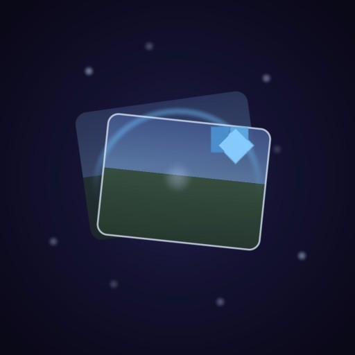
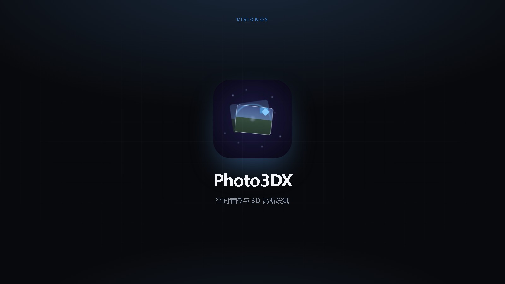

Photo3DX
空间看图，全景照片把你整个人包住
已发布visionOSv2.0
介绍
Photo3DX 把照片变成可以走进去的空间，同时也是一套完整的文件管理器。全景照片会完全包围你，普通照片会获得真实的深度感，设备上和云盘里的文件都能像在电脑上一样整理。 所有处理都在设备本机完成，不用注册、不上传、不追踪。打开全景图，周围环境会渐渐变暗，你可以上下左右随意张望，往上能仰到 90°，躺着看天也行。浮动按钮跟着画面走，不会挡住你正看的地方。 任何平面照片都能转成空间场景，深度信息全部在本机计算，左右歪头就能看到视差。用 iPhone 或 Vision Pro 拍的空间照片会以原生立体模式播放。 文件管理这块做得很像 Windows 资源管理器：侧边栏、完整路径地址栏、前进后退、通过 IP 地址连电脑共享文件夹，图片留在原来的位置，不导入「照片」、不复制。
功能
- 360° 全景沉浸浏览，可仰到 90° 躺着看
- 普通照片本机计算深度，转成有视差的空间场景
- 原生播放 iPhone / Vision Pro 拍的空间照片
- 像资源管理器一样的文件管理：侧栏、路径栏、前进后退
- 通过 IP 地址直接浏览电脑共享文件夹，不复制文件
- 全程本机处理，无账号、无上传、无追踪 SDK
截图
